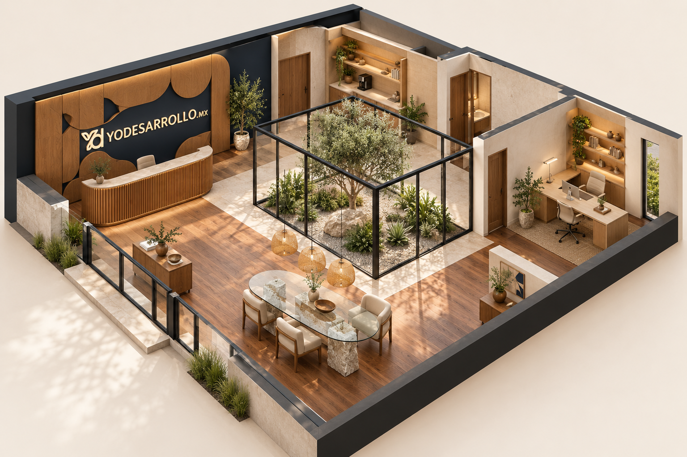

Abriendo el Despacho
Preparando materiales y espacios…
¿A dónde vamos?
Distribución preparada para crecer. Los expedientes se consultan en Drive. MOAC aún no carga sus tareas en la escena.
Cómo moverte
Caminar
Mueve el círculo con el pulgar izquierdo. Arrastra cualquier parte libre de la vista con el otro dedo para mirar.
Ir directamente
Toca Áreas y elige un lugar. Llegarás a su entrada, sin tener que cruzar toda la oficina.
En Caminar, usa W, A, S, D o las flechas para moverte. Arrastra la vista para mirar.
Áreas te lleva directamente a cada espacio.
Ver todo muestra el conjunto: arrastra para girar y usa la rueda o dos dedos para acercarte.
Junto a un lugar aparece un botón para abrir su ficha. También puedes tocar al personaje de Caso.
El personaje del caso aparece cuando el servidor autoriza su perfil. Tócalo o abre Agentes para consultar su conversación y expediente en Sheets.
Panel de agentes
El botón Agentes abre conversación, expediente, actividad y plan en un panel lateral. Los mensajes y recuerdos se recuperan de Sheets. La terminal interactiva dentro del puesto, el tablero de tareas y la voz siguen pendientes.
Pedir cambios con chinches
Entra desde Despacho en YOD OS. Abre la ficha de un espacio y elige señalar un lugar o pedir un cambio en esa ficha. Describe lo que quieres en la ventana habitual y pulsa Clavar.
Ver las referencias de Aurum